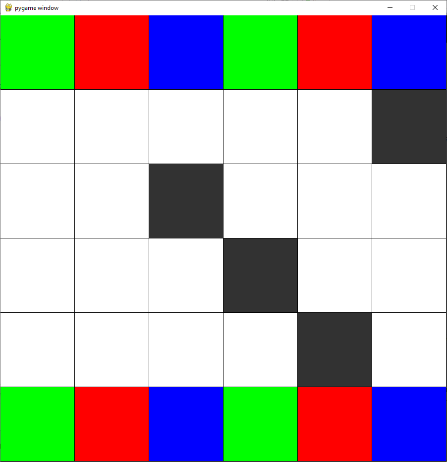
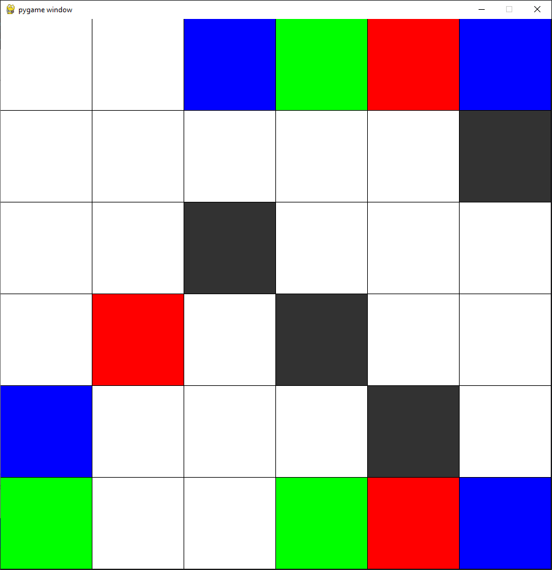

This page is for adversarial search. Adversarial search, also known as minimax search, is an algorithm used to choose the ideal move in a zero-sum turn based game, such as chess or connect 4.

This is the game we will use. One player starts on top, one at the bottom. Players will take turns moving their pieces. Red pieces defeat green pieces. Green pieces defeat blue pieces, and blue pieces defeat red pieces. Dark spaces on the map kill any pieces that goes onto them. The placement of the dark spaces is randomly generated at the start of the game.

The algorithm works by first generating every possible move it can make, and then for every one of those moves generates every possible move that its enemy could make. It repeats this process up to a certain depth, and then recursively chooses the move that will yield the best results according to a heuristic, assuming that the enemy plays optimally.
The heuristic used is to subtract the number of pieces the enemy has alive from the number of pieces the agent has alive. The value of the heuristic in the board states shown would thus be 0 and -2 for the first and second images respectively.
This project can be downloaded here.